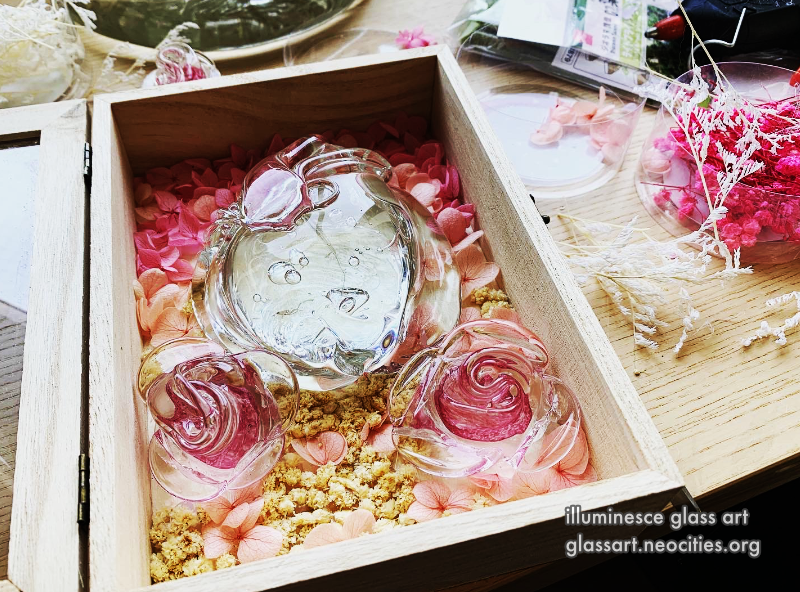
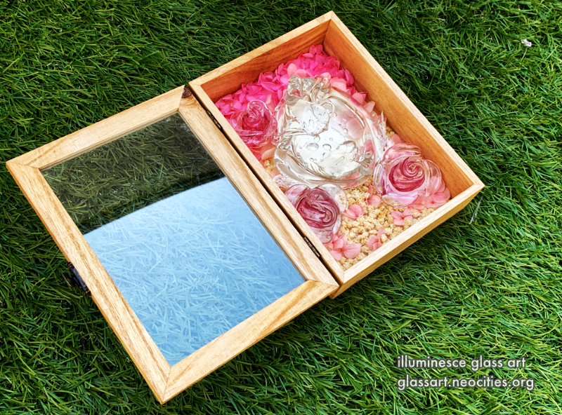
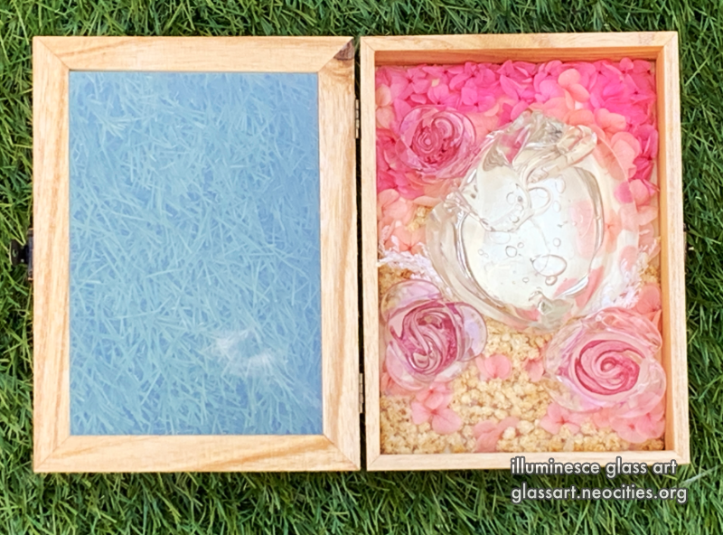
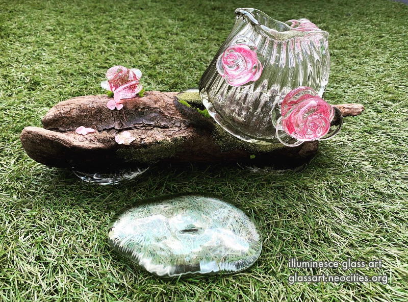
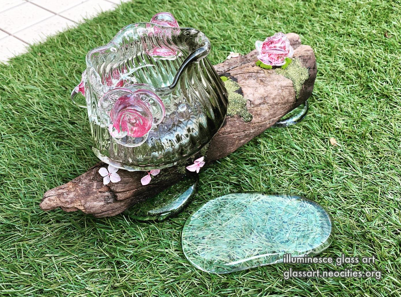
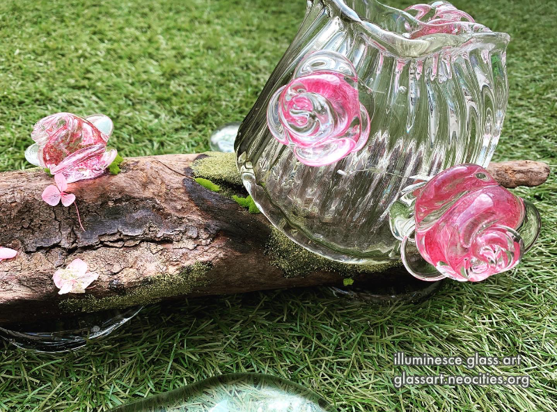
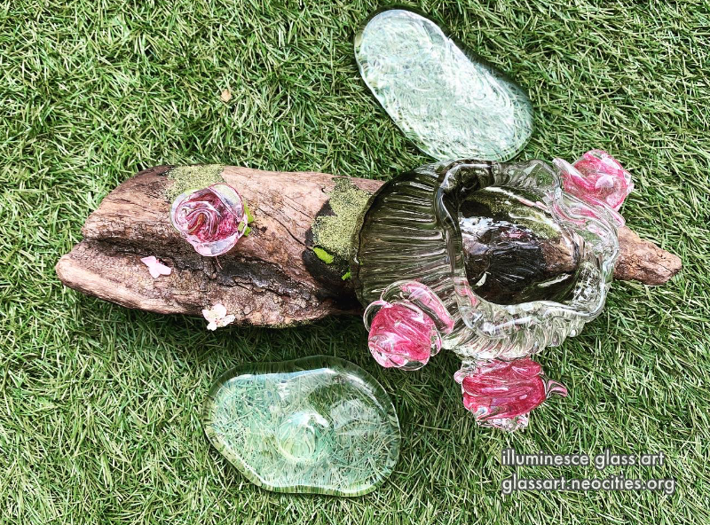
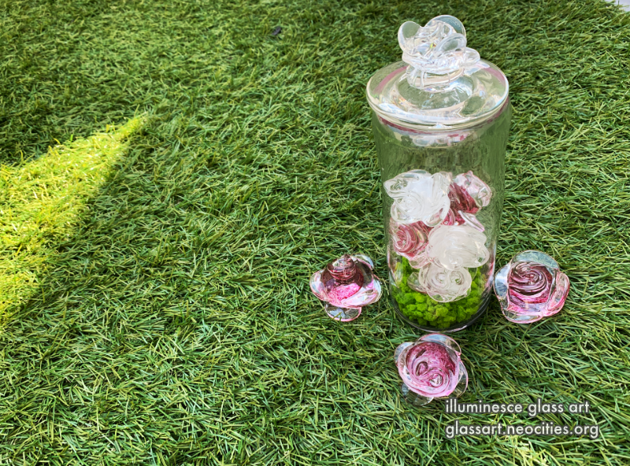
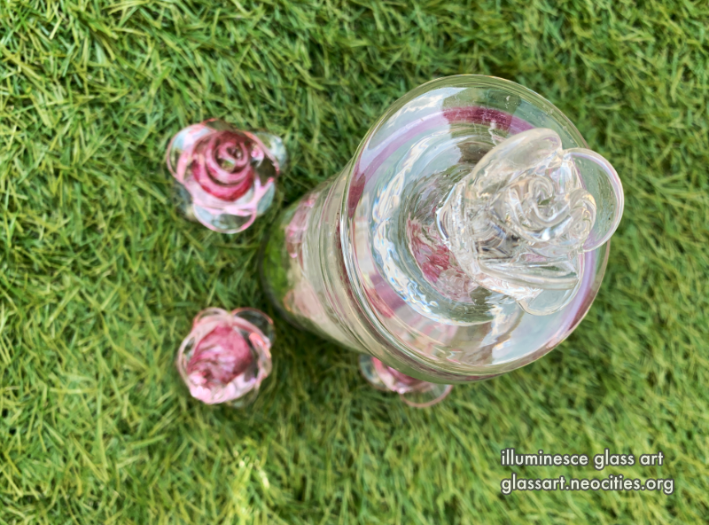
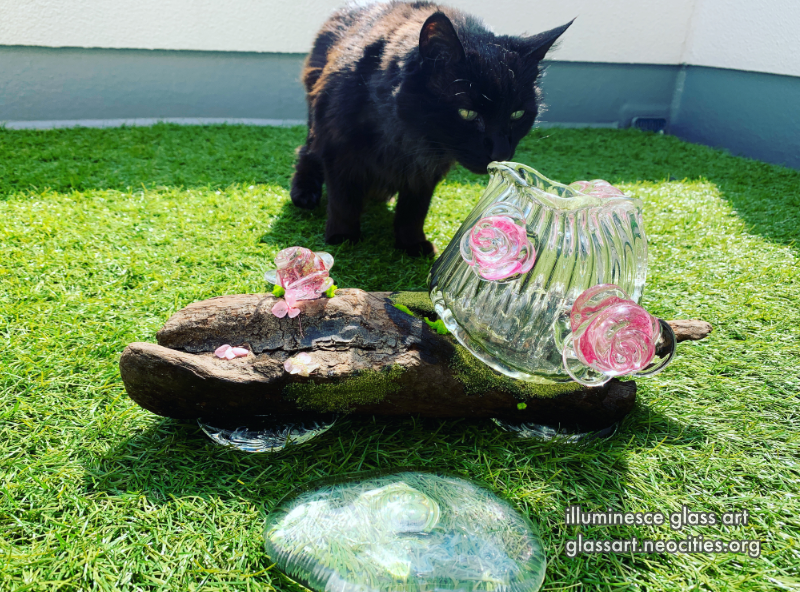

フィアレッスハート | Fearless Heart
作品の一言
Imogen Heap（イモージェン・ヒープ）の歌詞のインスパイアされた親友の結婚式のために作品作りました。
「親密」を巻き込むのは、誰でも怖がりがあると思います。私は、誰かから傷を付くのはどうするの？私は、被害を付けたら、悪い人ですか？
そういう怖がりを気つづ、「フィアレッスハート」は心が開いた、傷を受けられても、愛も受けられる生な心です。「怖がりがあっても、進みましょう」というの言葉は、結婚式の特別な日に伝えたかったから。
Inspired by lyrics from an Imogen Heap song,
"Fearless heart / I'm gonna take care of you"
I made these pieces for my best friend's wedding. I think we all have fears around intimacy. What if I get hurt? What if I hurt someone? Does that make me a bad person? A "Fearless Heart" is an open heart, one that can receive both hurt and love, a raw heart.
On my friend's very special day, I wanted to convey the words, "I trust you to move forward even if you're afraid" with these works.
作成年 | Year Made
2023年1月〜3月
January~March of 2023









